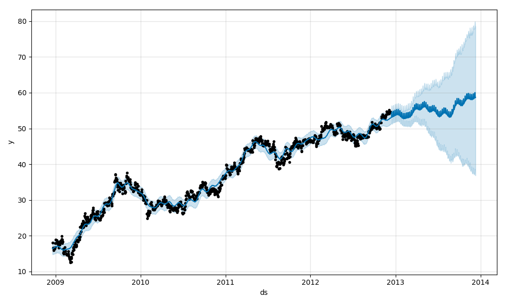
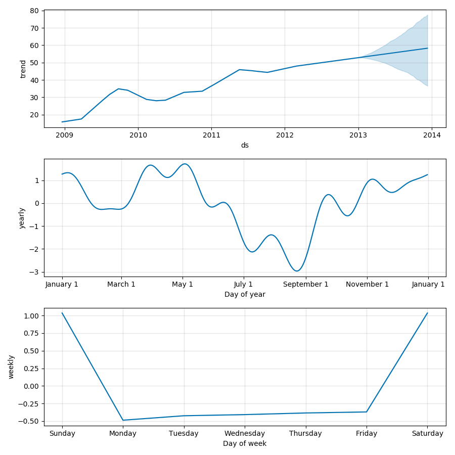

Time Series Forecasting Service
About
This is a demo of the Time Series Forecasting Service Front End using MSI share price data from 2007 to the present. The site is statically hosted on gitbub but used to be on AWS S3 behind a basic password
protection scheme described
here . There is a python code base that enables automatic updating of the data, models and forecasts that go into this static site. Tableau can be made to access the same data that this static site does, alowing for less customizable but more flexible / rapid investigation of the forecasts.
The TSFS git repo has the code and documentation for this static site, and the python code behind the
models and the updating system.
Try it out!
- Mouse over the chart to get nearest data point
- Hover on or select legend items to focus on a specific data series
- Use the slider handles to narrow the range of data. Then drag this window across the whole series.
Known Bugs
- When I use the correct dates, the whole things slows down for some reason I currently cannot explain. Looking into it.
- To achieve the nice shaded error bar, I use a hack the makes the upper confidence bound actually the difference between the upper and lower bounds stacked on top of a transparent lowerbond. It looks nice but the data values for the upper confidence bound are actually gap values
- If you resize the browser, it doesn't adjust. I have a decent idea on how to fix this but i figure it's not really that important.
Model Decomposition

